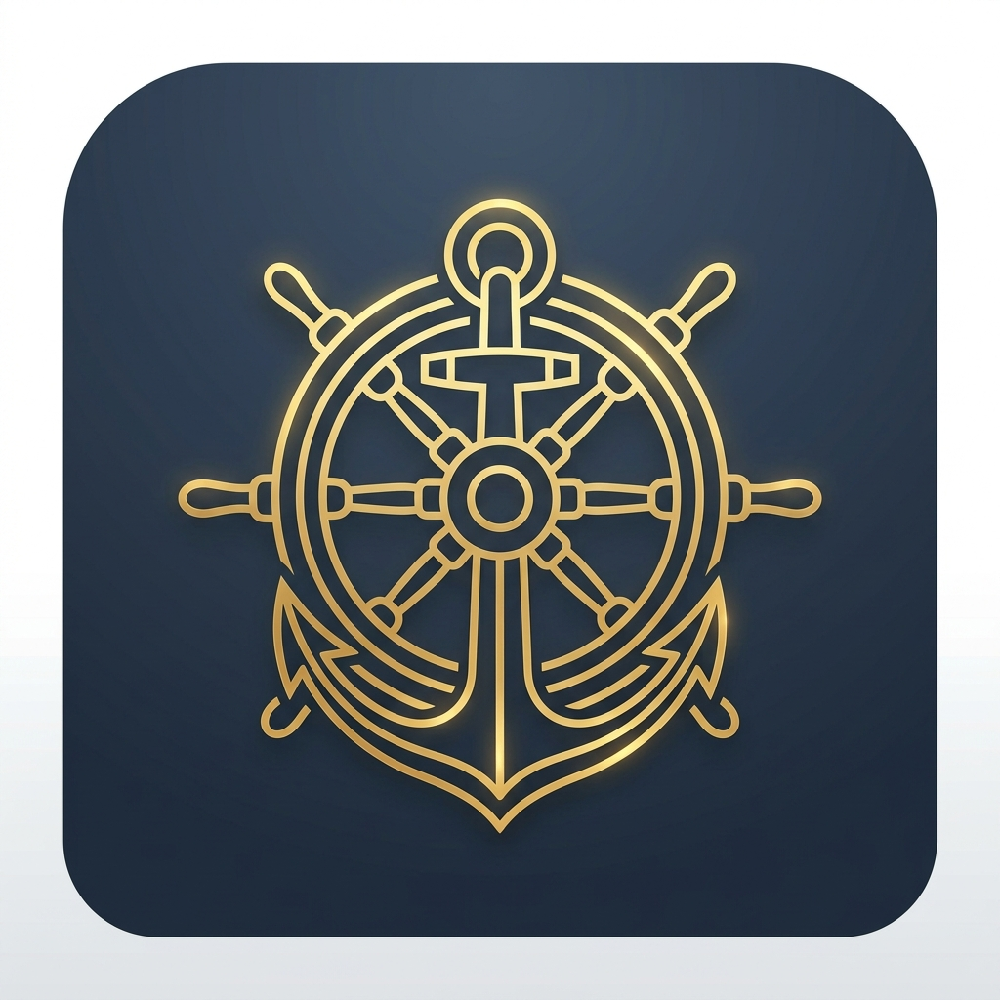

Kapteins Daagbok
Digitales Yacht-Logbuch — kostenlos & werbefrei
Führe dein Bordlogbuch digital: Reisetage, GPS-Tracks, Crew- und Schiffsdaten — Ende-zu-Ende-verschlüsselt, als App installierbar und auch offline auf See nutzbar.
Reisetage im nautischen Logbuch-Format (Hafen, Wetter, Besegelung, Crew, Tankstände, etc.)
Offline-fähige PWA — läuft auf jedem Smartphone & Tablet
Passkey-Anmeldung & Ende-zu-Ende Verschlüsselung
GPS-Track Upload (GPX/KML), Karte & Streckenstatistik
Foto-Anhänge pro Reisetag
Crew einladen — gemeinsam am Logbuch arbeiten
PDF- & CSV-Export
Verschlüsseltes Backup & Wiederherstellung
Logbuch mit Freunden teilen
Beliebig viele Schiffe und Logbücher
Deutsch & Englisch
Crafted in Kiel.Sailing.City.
Beta-Phase — Dein Feedback zählt
Kapteins Daagbok ist ein privates Hobbyprojekt ohne Gewinnabsicht. Als Beta-Tester hilfst du, die App für Skipper und Crew im Alltag zu verbessern — Rückmeldungen sind ausdrücklich willkommen.
kapteins-daagbok.eu
Im Browser öffnen oder als App zum Home-Bildschirm hinzufügen. Registrierung mit Passkey — kein App-Store nötig.